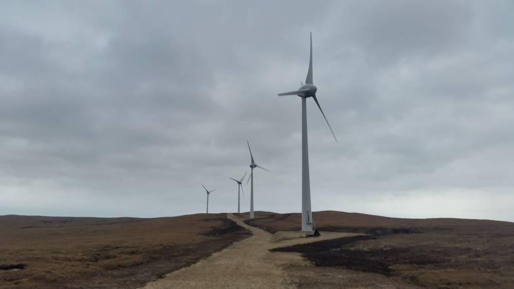

셰틀랜드 주민 에너지 단체, 스코틀랜드 정부에 지역에너지 지원금 다년 배정 요구

구들래드 공공재정 장관에게 서한…CARES 회복력기금은 2027년 3월 17일까지 써야
셰틀랜드 제도의 주민 에너지 단체와 개발회사들이 스코틀랜드 정부에 지역에너지 지원금 CARES(지역·재생에너지 사업)를 여러 해에 나눠 배정해 달라고 요구했다. 이들은 셰틀랜드 지역구 의원인 해나 메리 구들래드(Hannah Mary Goodlad) 공공재정 장관에게 서한을 보내, 곧 나올 스코틀랜드 예산에 다년 배정 조항을 넣어 달라고 청했다. 노스옐 등 셰틀랜드 곳곳의 주민 단체와 개발회사가 서명했다.
서한이 문제로 든 것은 기한이다. 가을에 받은 돈도 3월 중순에 닫히기 때문에 큰 사업을 여러 토막으로 나눠 발주해야 하고, 그때마다 조달 비용이 들며 공사는 겨울로 밀린다는 설명이다. 그레이트 브리티시 에너지(Great British Energy)가 운영하는 비슷한 기금은 여러 해 단위이고 스코틀랜드 정부 기후도전기금도 그랬는데 CARES만 해마다 끊는다고 서한은 짚었다.
스코틀랜드 정부는 7월 29일 보도자료에서 에너지 장관 스티븐 게틴스(Stephen Gethins)가 셰틀랜드를 찾았다고 알리며, CARES가 지금까지 8,300만 파운드 넘게 지역사회에 전달돼 1,200여 개 사업과 75MW의 재생에너지 설비를 뒷받침했다고 밝혔다. CARES는 지역에너지스코틀랜드(Local Energy Scotland)가 정부를 대신해 운영한다. 이 기관의 회복력기금(기존 CARES 지원 사업이 대상) 안내는 2026~27 회계연도 자금을 2027년 3월 17일까지 모두 쓰고 청구해야 한다고 적었다.
출처: Shetland News 2026-11-10 Chris Cope 원문 보기
출처: 스코틀랜드 정부 2026-07-29 보도자료 More communities to benefit from renewable energy 원문 보기
출처: 지역에너지스코틀랜드(Local Energy Scotland) 날짜 표시 없음(2026년 11월 18일 열람) CARES 회복력기금 안내 원문 보기
シェトランドの住民エネルギー団体、スコットランド政府に地域エネルギー支援金の複数年配分を要求
グッドラッド公共財政担当大臣に書簡…CARESレジリエンス基金は2027年3月17日までに使う必要
シェトランド諸島の住民エネルギー団体と開発会社が、スコットランド政府に対し、地域エネルギー支援金CARES（コミュニティー・再生可能エネルギー事業）を複数年に分けて配分するよう求めた。彼らはシェトランド選出議員のハンナ・メアリー・グッドラッド（Hannah Mary Goodlad）公共財政担当大臣に書簡を送り、近く示されるスコットランド予算に複数年配分の条項を盛り込むよう要請した。ノース・イェルなどシェトランド各地の住民団体と開発会社が署名した。
書簡が問題に挙げたのは期限だ。秋に受け取った資金も3月中旬に締め切られるため、大きな事業を複数に分けて発注せざるを得ず、そのたびに調達費用がかかり、工事は冬にずれ込むという説明である。グレート・ブリティッシュ・エナジー（Great British Energy）が運営する同様の基金は複数年単位で、スコットランド政府の気候チャレンジ基金もそうだったのに、CARESだけが毎年区切られると書簡は指摘した。
スコットランド政府は7月29日のプレスリリースで、エネルギー担当大臣のスティーブン・ゲシンズ（Stephen Gethins）がシェトランドを訪れたと伝え、CARESがこれまでに8,300万ポンド超を地域社会に届け、1,200余りの事業と75MWの再生可能エネルギー設備を支えたと明らかにした。CARESはローカル・エナジー・スコットランド（Local Energy Scotland）が政府に代わって運営している。同機関のレジリエンス基金（既存のCARES支援事業が対象）の案内は、2026〜27会計年度の資金を2027年3月17日までにすべて使い、引き出す必要があると記している。
出典: Shetland News 2026-11-10 Chris Cope 原文を読む
出典: スコットランド政府 2026-07-29 プレスリリース More communities to benefit from renewable energy 原文を読む
出典: ローカル・エナジー・スコットランド(Local Energy Scotland) 日付表示なし(2026年11月18日閲覧) CARESレジリエンス基金の案内 原文を読む
设得兰居民能源团体要求苏格兰政府对社区能源资助实行多年期拨付
致函古德拉德公共财政大臣…CARES韧性基金须在2027年3月17日前用完
设得兰群岛的居民能源团体和开发公司要求苏格兰政府，把社区能源资助金CARES（社区与可再生能源计划）改为分多年拨付。他们致信设得兰选区议员、公共财政大臣汉娜·玛丽·古德拉德（Hannah Mary Goodlad），请求在即将公布的苏格兰预算中加入多年期拨付条款。北耶尔等设得兰各地的居民团体和开发公司在信上署名。
信中指出的问题是期限。秋季拿到的资金同样在3月中旬截止，大项目只能拆成几段分别采购，每次都产生采购成本，施工也被推到冬季。信中还提到，大不列颠能源公司（Great British Energy）运营的类似基金是多年期，苏格兰政府的气候挑战基金过去也是，唯独CARES每年一断。
苏格兰政府在7月29日的新闻稿中介绍了能源大臣斯蒂芬·盖辛斯（Stephen Gethins）访问设得兰的情况，并称CARES迄今已向各社区提供8,300万英镑以上，支持了1,200多个项目和75MW的可再生能源装机。CARES由苏格兰地方能源机构（Local Energy Scotland）代表政府运营。该机构的韧性基金（面向已获CARES资助的项目）说明写明，2026至27财政年度的资金须在2027年3月17日前全部用完并提取。
来源: Shetland News 2026-11-10 Chris Cope 查看原文
来源: 苏格兰政府 2026-07-29 新闻稿 More communities to benefit from renewable energy 查看原文
来源: 苏格兰地方能源机构(Local Energy Scotland) 页面未标日期(2026年11月18日查阅) CARES韧性基金说明 查看原文
Shetland Community Energy Groups Ask Scottish Government to Award Local Energy Grants Over Several Years
Letter to Public Finance Minister Goodlad; CARES Resilience Fund money must be spent by 17 March 2027
Community energy groups and development companies in Shetland are asking the Scottish Government to award its local energy grant scheme, CARES (the Community and Renewable Energy Scheme), over several years. They wrote to Hannah Mary Goodlad, the public finance minister and Shetland's MSP, asking her to put a multi-year provision into the coming Scottish budget. Community groups from across Shetland, including North Yell, and development companies signed.
The letter names the deadline as the problem. Money received in autumn still closes in mid-March, so larger projects have to be tendered in separate pieces, each round adds procurement cost, and building work slides into winter. A comparable fund run by Great British Energy works over several years, as did the Scottish Government's Climate Challenge Fund, yet only CARES is cut off every year, the letter says.
In a 29 July news release, the Scottish Government reported Energy Minister Stephen Gethins's visit to Shetland and said CARES has so far delivered more than £83 million to communities, supporting more than 1,200 projects and 75MW of renewable capacity. Local Energy Scotland runs CARES on the government's behalf. Its page for the Resilience Fund, which is for existing CARES-supported projects, says money for the 2026-27 financial year must be fully spent and drawn down by 17 March 2027.
Source: Shetland News 2026-11-10 Chris Cope Read the original
Source: Scottish Government 2026-07-29 News release: More communities to benefit from renewable energy Read the original
Source: Local Energy Scotland no date shown (viewed 18 November 2026) CARES Resilience Fund page Read the original